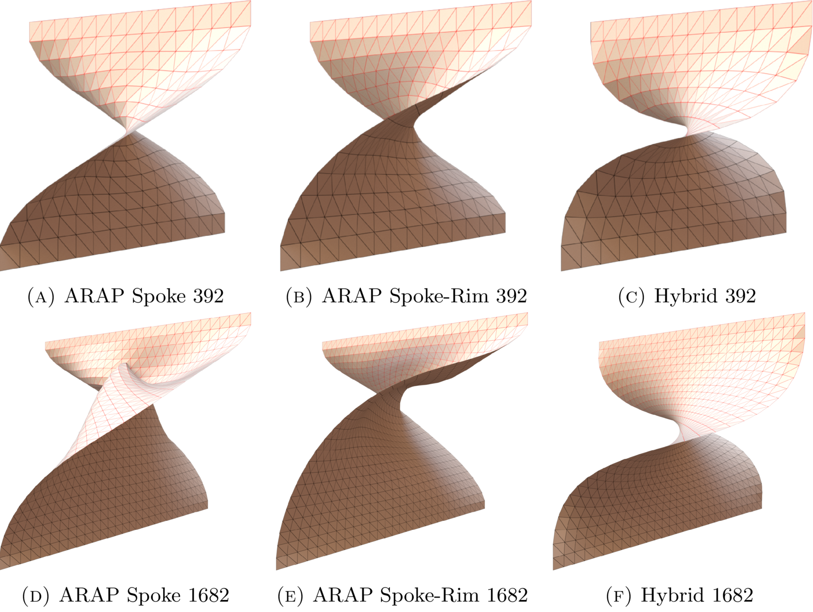
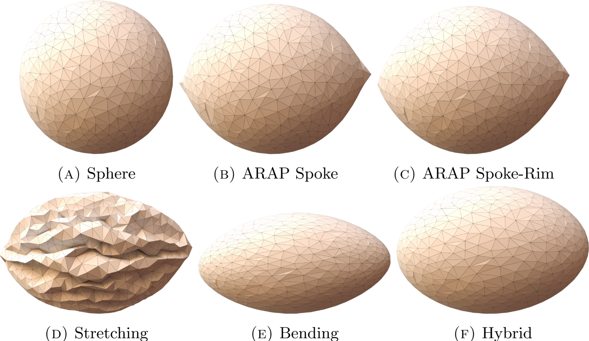

A Report on Shape Deformation with a Stretching and Bending Energy
1 Harvard University
arXiv.org
Abstract
In this report we describe a mesh editing system that we implemented
that uses a natural stretching and bending energy defined
over smooth surfaces. As such, this energy behaves uniformly under
various mesh resolutions. All of the elements of our approach
already exist in the literature. We hope that our discussions of these
energies helps to shed light on the behaviors of these methods and
provides a unified discussion of these methods.
Figure 1

Here we twist a regularly triangulated flat sheet. Three algorithms are shown,
the original ARAP (spoke) method, the ARAP-Spoke-Rim variant, and our
(hybrid) method. At low tessellation rates, the three behave similarly.
At higher tessellation rates, the two ARAP methods lose their ability to
resist bending. Our method is insensitive to this resolution change.
Figure 2

We deform a sphere by five algorithms. The
original shape with
one point fixed, and another point as moving handle.
In these examples, the two ARAP methods maintain the overall spherical
shape by concentrating curvature at sharper cusps.
The stretching-only result wrinkles up completely (there are many
wrinkled triangulated surfaces in 3D that will be nearly isometric, and we
are finding one such local minimum).
The bending-only
result allows for too much surface stretching.
The
hybrid result demonstrates the best
deformation result.
Downloads
 Paper download:
Paper download:
Slide
 Slide powerpoint file:
Slide powerpoint file:
Publication
Hui Zhao,Steven J. Gortler.
A Report on Shape Deformation with a Stretching and Bending Energy.
http://arxiv.org/abs/1603.06821
 Bibtex:
Bibtex:
@ARTICLE{2016arXiv160306821Z,
author = {{Zhao}, H. and {Gortler}, S.~J.},
title = "{A Report on Shape Deformation with a Stretching and Bending Energy}",
journal = {ArXiv e-prints},
archivePrefix = "arXiv",
eprint = {1603.06821},
primaryClass = "cs.GR",
keywords = {Computer Science - Graphics},
year = 2016,
month = mar,
adsurl = {http://adsabs.harvard.edu/abs/2016arXiv160306821Z},
adsnote = {Provided by the SAO/NASA Astrophysics Data System}
}
author = {{Zhao}, H. and {Gortler}, S.~J.},
title = "{A Report on Shape Deformation with a Stretching and Bending Energy}",
journal = {ArXiv e-prints},
archivePrefix = "arXiv",
eprint = {1603.06821},
primaryClass = "cs.GR",
keywords = {Computer Science - Graphics},
year = 2016,
month = mar,
adsurl = {http://adsabs.harvard.edu/abs/2016arXiv160306821Z},
adsnote = {Provided by the SAO/NASA Astrophysics Data System}
}
Acknowledgements
We thank anonymous reviewers for encouragements and thoughtful
suggestions.
We thank the providers of the free 3D models used in this paper: Armadillo from Stanford Computer Graphics Laboratory; Cactus from AIM@Shape; BumpPlane from Alec Jacobson. We used Mitsuba[Mitsuba 2015} for rendering images. Our algorithms are implemented on MeshDGP [Zhao 2016] Framework . We also thank Libigl [Libigl 2016] for reference.
We thank the providers of the free 3D models used in this paper: Armadillo from Stanford Computer Graphics Laboratory; Cactus from AIM@Shape; BumpPlane from Alec Jacobson. We used Mitsuba[Mitsuba 2015} for rendering images. Our algorithms are implemented on MeshDGP [Zhao 2016] Framework . We also thank Libigl [Libigl 2016] for reference.
*Hui Zhao, Steven J. Gortler are currently working at Harvard.